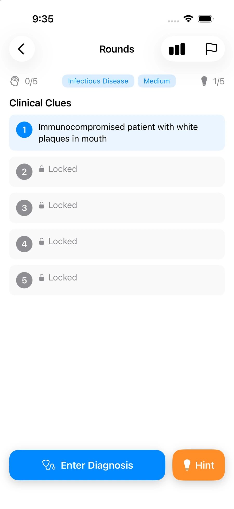
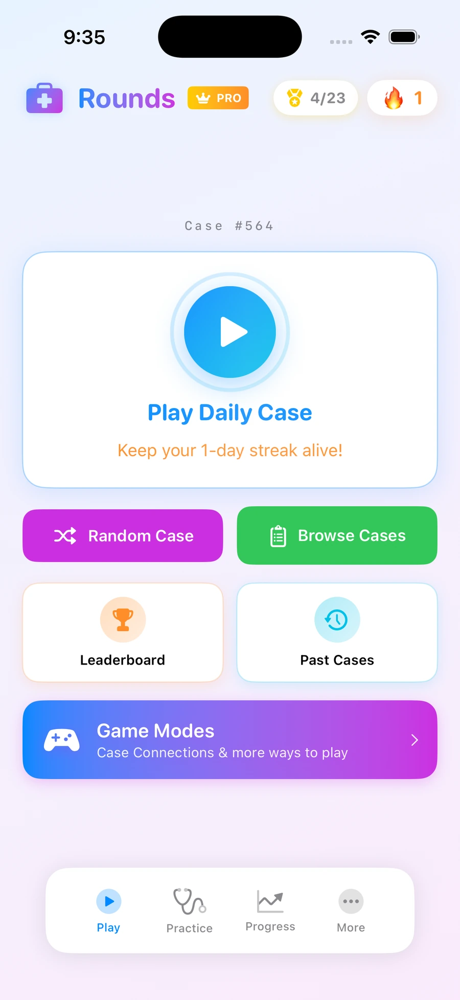
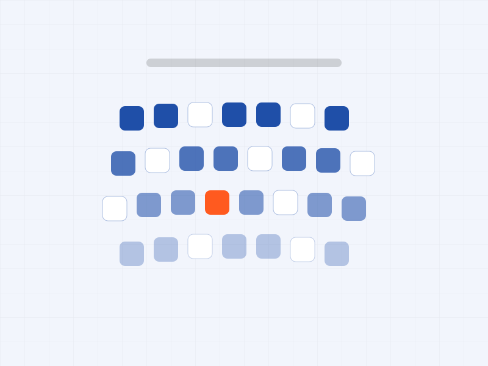

Advancing Health
Innovating within healthcare to improve how medicine is learned, practiced, and delivered — built by people close enough to the work to get the details right.
Rounds
Brask Group builds software and writes analysis for the systems people depend on most — starting in medicine, where we can see the problem clearest, and building outward from there.
Independent Self-funded No outside capital
Our vision
At Brask Group, we believe humanity advances when individuals and communities are empowered to reach their full potential.
That belief has a specific first target. AI is coming to medicine regardless of how the field feels about it — training, clinical practice, and how care gets delivered are all already changing. Some clinicians are excited, many are anxious, and both reactions are reasonable: a lot of what’s being built is built by people who’ve never sat with a patient or carried a pager.
We build from the other side of that gap. Not as a general bet on technology, but problem by problem, wherever the failure mode is clear enough to build directly against. Every product and every essay is a brick in the same structure — a specific, growing answer to what the systems people depend on should actually look like.
“I’m dedicated to creating opportunities that enable people to build, grow, and make meaningful impact. Through first-principles thinking and strategic innovation, we can unlock unprecedented potential in others.”Ali Mirza, Founder
What we work on
Four directions, one thesis: people do more when the systems around them are built with them in mind.
Innovating within healthcare to improve how medicine is learned, practiced, and delivered — built by people close enough to the work to get the details right.
Rounds
Empowering builders and operators with the systems, tools, and leverage to own their work instead of renting it.
Byline Blogs
Supporting ambitious people and the communities and institutions that hold them together, one coordination problem at a time.
Sitr
Investing in the future through education, and through the frontier problems nobody has gotten around to solving yet.
My Med Stack
What we’ve built
A starting point, not the whole map. Each one began as a problem we could see clearly enough to build directly against.


Advancing Health
Medical students study the way they’d use a search engine: ask, get an answer, move on. That’s efficient, and it skips the exact back-and-forth reasoning that builds clinical intuition. Rounds puts that reasoning back in — case simulations that push students to work a case the way a real patient encounter demands, rather than handing them the answer.
Live on the App Store, used daily by students across clinical rotations, and self-sustaining on its own revenue.
Advancing Horizons
A discovery tool for medical training programs, built to simplify an application process that’s more opaque than it needs to be. A straightforward data and search problem, solved as one.

Advancing Society
Originally built to solve inpatient bed management, Sitr’s core logic generalized into event seating — a clean example of how a healthcare-first problem can produce a broader product.
Advancing Agency
An automated content pipeline giving small healthcare practices — starting with direct primary care clinics — access to real SEO content without agency costs.
Analysis
Software is half the approach. The other half is written.
Written from inside the training pipeline rather than from a distance: essays on AI in clinical practice, on how medical education actually works, and on the systems underneath both.
Every essay is the same brick as every product — a specific answer to a specific problem, published where practitioners can argue back.
Read Side Effects →The company
Brask Group was founded by Ali Mirza when he was a first-year medical student at UConn School of Medicine. Before Brask Group and medical school he founded and operated a marketing agency, JANUS. Before that he worked at Epic Systems, learning first-hand what the interface of technology and medicine looks like at the highest levels today. In undergrad he studied Classics, Biochemistry, Economics, and Game Theory.
Today, Ali writes Side Effects and leads Brask Group’s product and editorial work.
More about Ali →Rounds funds itself. The rest of the portfolio is funded independently — through consulting work, JANUS (a marketing agency operated prior to Brask Group), and Capital Alpha, an investment portfolio under the same ownership.
Brask Group has taken no outside investment. That is a deliberate choice: it means the work answers to the problem in front of it rather than to a return schedule.
Be part of building the parts of this future worth wanting — as a partner, a collaborator, or a reader who argues back.
ali@braskgroup.com